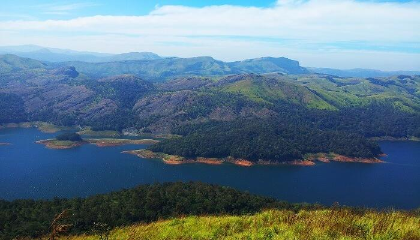

A proud home of South India’s highest peak, Anamudi that stands at a height of 2,695 meters, Idukki is one of the most stunning hill stations in Kerala.Housing 13 other peaks with a height of over 2000 meters, it attracts tourist from across the globe for its wildlife sanctuaries, hill stations, spice plantation centers, and mountain treks. And to experience the best of all these natural marvels, include these mesmerizing Idukki tourist places that will add the much needed charm to your holiday in Kerala.
Top Places To Visit In Idukki
Idukki Wildlife Sanctuary: For Wildlife Enthusiasts
Spread across an area of 70 sq. kms, the Idukki Wildlife Sanctuary is one of the famous tourist places in Idukki. Situated at an altitude of 450 to 748 meters, the sanctuary occupies the forest land between the Cheruthoni and Periyar rivers, and is a natural habitat for several species of animals. Featuring a picturesque lake around the sanctuary, the whole region is covered by tropical, and evergreen trees. This is one of the most popular things to do in Idukki. Location: Vellappara, Painavu, Idukki, Kerala 685603 Timings: Monday to Sunday – 9 AM to 6 PM
Idukki Arch Dam: Peaceful Glances

Constructed across the hills of Kuravan and Kurathi, the Idukki Arch Dam stands tall at a height of about 550 ft. Recognized as the world’s second and Asia’s first arch dam, the massive Idukki Dam can be witnessed in all its glory on the Periyar river. The natural beauty surrounding the dam is breathtaking and is one of the most popular places to see in Idukki.
Calvary Mount: Gorgeous Landscapes

Of the many popular Idukki places to visit, the Kalvari Mount is a must-visit and one of the most beautiful tourist attractions in Idukki. Offering charismatic views of the gorgeous landscape that stretches from the Idukki Reservoir to the famous Ayyappancoil, your visit to Idukki is totally incomplete without visiting the Calvary Mount Viewpoint. This place is surrounded by beautiful homestays in Idukki offering a perfect vacation.